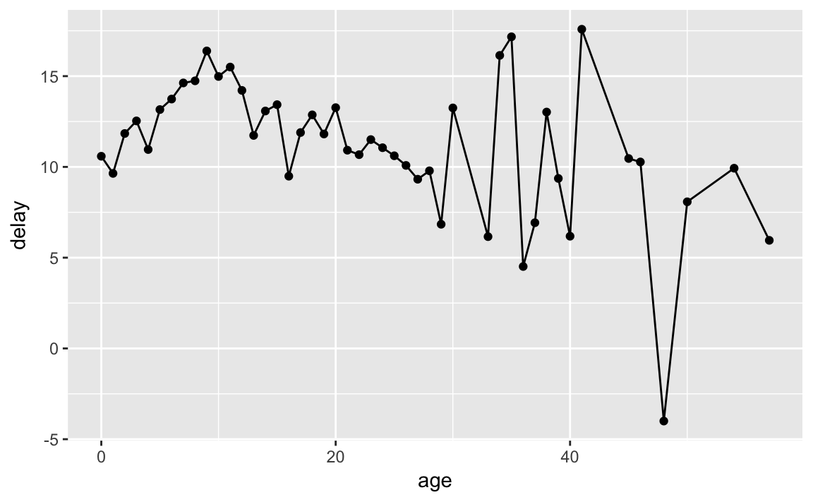
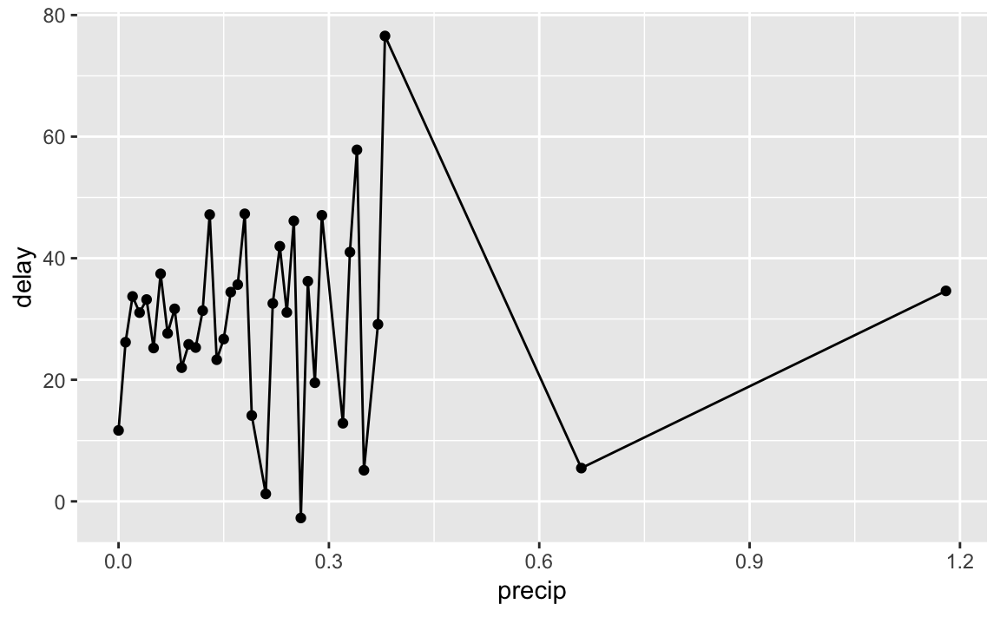
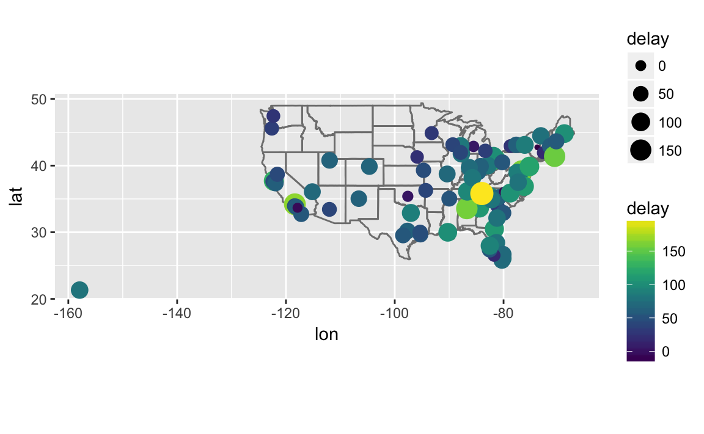
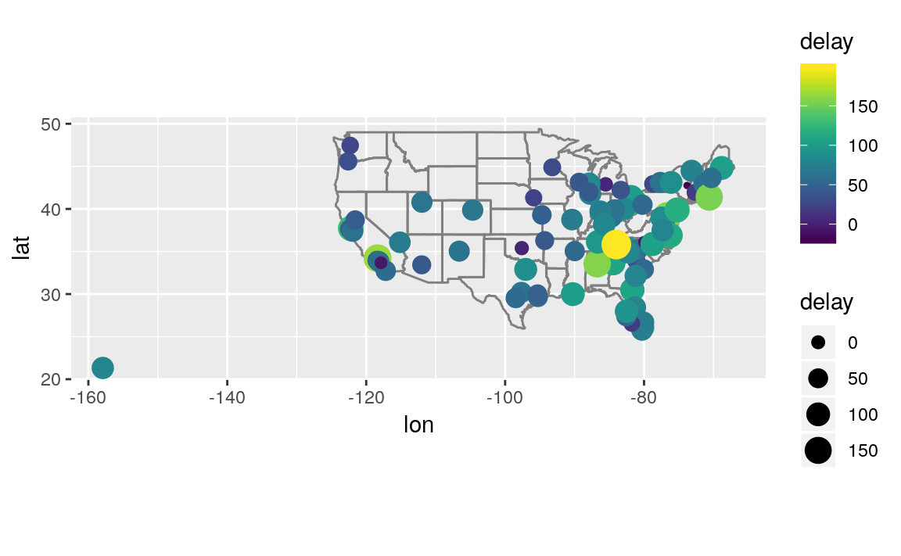

13 Relational data
13.1 Introduction
The package datamodelr is used to draw database schema:
Exercise 13.1.1
Imagine you wanted to draw (approximately) the route each plane flies from its origin to its destination. What variables would you need? What tables would you need to combine?
flightstable:originanddestairportstable: longitude and latitude variables- join
flightswithairportstwice. The first join adds the location of the origin airport (origin). The second join adds the location of destination airport (dest).
Exercise 13.1.2
I forgot to draw the relationship between weather and airports. What is the relationship and how should it appear in the diagram?
The variable origin in weather is matched with faa in airports.
Exercise 13.1.3
weather only contains information for the origin (NYC) airports. If it contained weather records for all airports in the USA, what additional relation would it define with flights?
year, month, day, hour, origin in weather would be matched to year, month, day, hour, dest in flight (though it should use the arrival date-time values for dest if possible).
Exercise 13.1.4
We know that some days of the year are “special”, and fewer people than usual fly on them. How might you represent that data as a data frame? What would be the primary keys of that table? How would it connect to the existing tables?
I would add a table of special dates.
The primary key would be date.
It would match to the year, month, day columns of `flights.
13.2 Keys
Exercise 13.2.1
Add a surrogate key to flights.
I add the column flight_id as a surrogate key.
I sort the data prior to making the key, even though it is not strictly necessary, so the order of the rows has some meaning.
flights %>%
arrange(year, month, day, sched_dep_time, carrier, flight) %>%
mutate(flight_id = row_number()) %>%
glimpse()
#> Observations: 336,776
#> Variables: 20
#> $ year <int> 2013, 2013, 2013, 2013, 2013, 2013, 2013, 2013,...
#> $ month <int> 1, 1, 1, 1, 1, 1, 1, 1, 1, 1, 1, 1, 1, 1, 1, 1,...
#> $ day <int> 1, 1, 1, 1, 1, 1, 1, 1, 1, 1, 1, 1, 1, 1, 1, 1,...
#> $ dep_time <int> 517, 533, 542, 544, 554, 559, 558, 559, 558, 55...
#> $ sched_dep_time <int> 515, 529, 540, 545, 558, 559, 600, 600, 600, 60...
#> $ dep_delay <dbl> 2, 4, 2, -1, -4, 0, -2, -1, -2, -2, -3, NA, 1, ...
#> $ arr_time <int> 830, 850, 923, 1004, 740, 702, 753, 941, 849, 8...
#> $ sched_arr_time <int> 819, 830, 850, 1022, 728, 706, 745, 910, 851, 8...
#> $ arr_delay <dbl> 11, 20, 33, -18, 12, -4, 8, 31, -2, -3, -8, NA,...
#> $ carrier <chr> "UA", "UA", "AA", "B6", "UA", "B6", "AA", "AA",...
#> $ flight <int> 1545, 1714, 1141, 725, 1696, 1806, 301, 707, 49...
#> $ tailnum <chr> "N14228", "N24211", "N619AA", "N804JB", "N39463...
#> $ origin <chr> "EWR", "LGA", "JFK", "JFK", "EWR", "JFK", "LGA"...
#> $ dest <chr> "IAH", "IAH", "MIA", "BQN", "ORD", "BOS", "ORD"...
#> $ air_time <dbl> 227, 227, 160, 183, 150, 44, 138, 257, 149, 158...
#> $ distance <dbl> 1400, 1416, 1089, 1576, 719, 187, 733, 1389, 10...
#> $ hour <dbl> 5, 5, 5, 5, 5, 5, 6, 6, 6, 6, 6, 6, 6, 6, 6, 6,...
#> $ minute <dbl> 15, 29, 40, 45, 58, 59, 0, 0, 0, 0, 0, 0, 0, 0,...
#> $ time_hour <dttm> 2013-01-01 05:00:00, 2013-01-01 05:00:00, 2013...
#> $ flight_id <int> 1, 2, 3, 4, 5, 6, 7, 8, 9, 10, 11, 12, 13, 14, ...Exercise 13.2.2
Identify the keys in the following datasets
Lahman::Battingbabynames::babynamesnasaweather::atmosfueleconomy::vehiclesggplot2::diamonds
(You might need to install some packages and read some documentation.)
The answer to each part follows.
The primary key for
Lahman::BattingisplayerID,yearID,stint. It is not simplyplayerID,yearIDbecause players can have different stints in different leagues within the same year.The primary key for
babynames::babynamesisyear,sex,name. It is not simplyyear,namesince names can appear for both sexes with different counts.The primary key for
nasaweather::atmosis the location and time of the measurement:lat,long,year,month.The column
id(unique EPA identifier) is the primary key forfueleconomy::vehicles:There is no primary key for
ggplot2::diamonds. The number of distinct rows in the dataset is less than the total number of rows, which implies that there is no combination of variables uniquely identifies the observations.
Exercise 13.2.3
Draw a diagram illustrating the connections between the Batting, Master, and Salaries tables in the Lahman package. Draw another diagram that shows the relationship between Master, Managers, AwardsManagers.
Most flowchart or diagramming software can be used used to create database schema diagrams. For example, the diagrams in R for Data Science were created with Gliffy.
You can use anything to create these diagrams, but I’ll use the R package datamodelr to programmatically create data models from R.
For the Batting, Master, and Salaries tables:
Master- Primary keys:
playerID
- Primary keys:
BattingPrimary keys:
yearID,yearID,stintForeign Keys:
playerID=Master$playerID(many-to-1)
SalariesPrimary keys:
yearID,teamID,playerIDForeign Keys
playerID=Master$playerID(many-to-1)
dm1 <- dm_from_data_frames(list(Batting = Lahman::Batting,
Master = Lahman::Master,
Salaries = Lahman::Salaries)) %>%
dm_set_key("Batting", c("playerID", "yearID", "stint")) %>%
dm_set_key("Master", "playerID") %>%
dm_set_key("Salaries", c("yearID", "teamID", "playerID")) %>%
dm_add_references(
Batting$playerID == Master$playerID,
Salaries$playerID == Master$playerID
)
dm_create_graph(dm1, rankdir = "LR", columnArrows = TRUE)For the Master, Manager, and AwardsManagers tables:
Master- Primary keys:
playerID
- Primary keys:
ManagersPrimary keys:
yearID,teamID,inseasonForeign Keys:
playerID=Master$playerID(many-to-1)
AwardsManagers:playerID=Master$playerID(many-to-1)
dm2 <- dm_from_data_frames(list(Master = Lahman::Master,
Managers = Lahman::Managers,
AwardsManagers = Lahman::AwardsManagers)) %>%
dm_set_key("Master", "playerID") %>%
dm_set_key("Managers", c("yearID", "teamID", "inseason")) %>%
dm_set_key("AwardsManagers", c("playerID", "awardID", "yearID")) %>%
dm_add_references(
Managers$playerID == Master$playerID,
AwardsManagers$playerID == Master$playerID
)
dm_create_graph(dm2, rankdir = "LR", columnArrows = TRUE)In the previous diagrams, I do not consider teamID and lgID as foreign keys even though they appear in multiple tables (and have the same meaning) because they are not primary keys in the tables considered in this exercise.
The teamID variable references Teams$teamID, and lgID does not have its own table.
How would you characterize the relationship between the Batting, Pitching, and Fielding tables?
The Batting, Pitching, and Fielding tables all have a primary key consisting of the playerID, yearID, and stint variables.
They all have a 1-1 relationship to each other.
13.3 Mutating Joins
Exercise 13.3.1
Compute the average delay by destination, then join on the airports data frame so you can show the spatial distribution of delays. Here’s an easy way to draw a map of the United States:
airports %>%
semi_join(flights, c("faa" = "dest")) %>%
ggplot(aes(lon, lat)) +
borders("state") +
geom_point() +
coord_quickmap()
#>
#> Attaching package: 'maps'
#> The following object is masked from 'package:purrr':
#>
#> map
(Don’t worry if you don’t understand what semi_join() does — you’ll learn about it next.)
avg_dest_delays <-
flights %>%
group_by(dest) %>%
# arrival delay NA's are cancelled flights
summarise(delay = mean(arr_delay, na.rm = TRUE)) %>%
inner_join(airports, by = c(dest = "faa"))
avg_dest_delays %>%
ggplot(aes(lon, lat, colour = delay)) +
borders("state") +
geom_point() +
coord_quickmap()You might want to use the size or color of the points to display the average delay for each airport.
Exercise 13.3.2
Add the location of the origin and destination (i.e. the lat and lon) to flights.
You can perform one join after another. If duplicate variables are found, by default, dplyr will distinguish the two by adding .x, and .y to the ends of the variable names to solve naming conflicts.
airport_locations <- airports %>%
select(faa, lat, lon)
flights %>%
select(year:day, hour, origin, dest) %>%
left_join(
airport_locations,
by = c("origin" = "faa")
) %>%
left_join(
airport_locations,
by = c("dest" = "faa")
)
#> # A tibble: 336,776 x 10
#> year month day hour origin dest lat.x lon.x lat.y lon.y
#> <int> <int> <int> <dbl> <chr> <chr> <dbl> <dbl> <dbl> <dbl>
#> 1 2013 1 1 5 EWR IAH 40.7 -74.2 30.0 -95.3
#> 2 2013 1 1 5 LGA IAH 40.8 -73.9 30.0 -95.3
#> 3 2013 1 1 5 JFK MIA 40.6 -73.8 25.8 -80.3
#> 4 2013 1 1 5 JFK BQN 40.6 -73.8 NA NA
#> 5 2013 1 1 6 LGA ATL 40.8 -73.9 33.6 -84.4
#> 6 2013 1 1 5 EWR ORD 40.7 -74.2 42.0 -87.9
#> # ... with 3.368e+05 more rowsThis default can be over-ridden using the suffix argument.
airport_locations <- airports %>%
select(faa, lat, lon)
flights %>%
select(year:day, hour, origin, dest) %>%
left_join(
airport_locations,
by = c("origin" = "faa")
) %>%
left_join(
airport_locations,
by = c("dest" = "faa"),
suffix = c("_origin", "_dest")
# existing lat and lon variables in tibble gain the _origin suffix
# new lat and lon variables are given _dest suffix
)
#> # A tibble: 336,776 x 10
#> year month day hour origin dest lat_origin lon_origin lat_dest
#> <int> <int> <int> <dbl> <chr> <chr> <dbl> <dbl> <dbl>
#> 1 2013 1 1 5 EWR IAH 40.7 -74.2 30.0
#> 2 2013 1 1 5 LGA IAH 40.8 -73.9 30.0
#> 3 2013 1 1 5 JFK MIA 40.6 -73.8 25.8
#> 4 2013 1 1 5 JFK BQN 40.6 -73.8 NA
#> 5 2013 1 1 6 LGA ATL 40.8 -73.9 33.6
#> 6 2013 1 1 5 EWR ORD 40.7 -74.2 42.0
#> # ... with 3.368e+05 more rows, and 1 more variable: lon_dest <dbl>It’s always good practice to have clear variable names.
Exercise 13.3.3
Is there a relationship between the age of a plane and its delays?
Surprisingly not. If anything (departure) delay seems to decrease slightly with the age of the plane. This could be due to choices about how airlines allocate planes to airports.
plane_ages <-
planes %>%
mutate(age = 2013 - year) %>%
select(tailnum, age)
flights %>%
inner_join(plane_ages, by = "tailnum") %>%
group_by(age) %>%
filter(!is.na(dep_delay)) %>%
summarise(delay = mean(dep_delay)) %>%
ggplot(aes(x = age, y = delay)) +
geom_point() +
geom_line()
#> Warning: Removed 1 rows containing missing values (geom_point).
#> Warning: Removed 1 rows containing missing values (geom_path).
Exercise 13.3.4
What weather conditions make it more likely to see a delay?
Almost any amount or precipitation is associated with a delay, though not as strong a trend after 0.02 in as one would expect
flight_weather <-
flights %>%
inner_join(weather, by = c("origin" = "origin",
"year" = "year",
"month" = "month",
"day" = "day",
"hour" = "hour"))
flight_weather %>%
group_by(precip) %>%
summarise(delay = mean(dep_delay, na.rm = TRUE)) %>%
ggplot(aes(x = precip, y = delay)) +
geom_line() + geom_point()
Exercise 13.3.5
What happened on June 13 2013? Display the spatial pattern of delays, and then use Google to cross-reference with the weather.
There was a large series of storms (derechos) in the southeastern US (see June 12-13, 2013 derecho series)
The largest delays are in Tennessee (Nashville), the Southeast, and the Midwest, which were the locations of the derechos:
library(viridis)
#> Loading required package: viridisLite
flights %>%
filter(year == 2013, month == 6, day == 13) %>%
group_by(dest) %>%
summarise(delay = mean(arr_delay, na.rm = TRUE)) %>%
inner_join(airports, by = c("dest" = "faa")) %>%
ggplot(aes(y = lat, x = lon, size = delay, colour = delay)) +
borders("state") +
geom_point() +
coord_quickmap() +
scale_colour_viridis()
#> Warning: Removed 3 rows containing missing values (geom_point).
13.4 Filtering Joins
Exercise 13.4.1
What does it mean for a flight to have a missing tailnum? What do the tail numbers that don’t have a matching record in planes have in common? (Hint: one variable explains ~90% of the problems.)
American Airlines (AA) and Envoy Airlines (MQ) don’t report tail numbers.
Exercise 13.4.2
Filter flights to only show flights with planes that have flown at least 100 flights.
planes_gt100 <-
filter(flights) %>%
group_by(tailnum) %>%
count() %>%
filter(n > 100)
flights %>%
semi_join(planes_gt100, by = "tailnum")
#> # A tibble: 229,202 x 19
#> year month day dep_time sched_dep_time dep_delay arr_time
#> <int> <int> <int> <int> <int> <dbl> <int>
#> 1 2013 1 1 517 515 2 830
#> 2 2013 1 1 533 529 4 850
#> 3 2013 1 1 544 545 -1 1004
#> 4 2013 1 1 554 558 -4 740
#> 5 2013 1 1 555 600 -5 913
#> 6 2013 1 1 557 600 -3 709
#> # ... with 2.292e+05 more rows, and 12 more variables:
#> # sched_arr_time <int>, arr_delay <dbl>, carrier <chr>, flight <int>,
#> # tailnum <chr>, origin <chr>, dest <chr>, air_time <dbl>,
#> # distance <dbl>, hour <dbl>, minute <dbl>, time_hour <dttm>Exercise 13.4.3
Combine fueleconomy::vehicles and fueleconomy::common to find only the records for the most common models.
The table fueleconomy::common identifies vehicles by make and model:
glimpse(fueleconomy::vehicles)
#> Observations: 33,442
#> Variables: 12
#> $ id <int> 27550, 28426, 27549, 28425, 1032, 1033, 3347, 13309, 133...
#> $ make <chr> "AM General", "AM General", "AM General", "AM General", ...
#> $ model <chr> "DJ Po Vehicle 2WD", "DJ Po Vehicle 2WD", "FJ8c Post Off...
#> $ year <int> 1984, 1984, 1984, 1984, 1985, 1985, 1987, 1997, 1997, 19...
#> $ class <chr> "Special Purpose Vehicle 2WD", "Special Purpose Vehicle ...
#> $ trans <chr> "Automatic 3-spd", "Automatic 3-spd", "Automatic 3-spd",...
#> $ drive <chr> "2-Wheel Drive", "2-Wheel Drive", "2-Wheel Drive", "2-Wh...
#> $ cyl <int> 4, 4, 6, 6, 4, 6, 6, 4, 4, 6, 4, 4, 6, 4, 4, 6, 5, 5, 6,...
#> $ displ <dbl> 2.5, 2.5, 4.2, 4.2, 2.5, 4.2, 3.8, 2.2, 2.2, 3.0, 2.3, 2...
#> $ fuel <chr> "Regular", "Regular", "Regular", "Regular", "Regular", "...
#> $ hwy <int> 17, 17, 13, 13, 17, 13, 21, 26, 28, 26, 27, 29, 26, 27, ...
#> $ cty <int> 18, 18, 13, 13, 16, 13, 14, 20, 22, 18, 19, 21, 17, 20, ...
glimpse(fueleconomy::common)
#> Observations: 347
#> Variables: 4
#> $ make <chr> "Acura", "Acura", "Acura", "Acura", "Acura", "Audi", "Au...
#> $ model <chr> "Integra", "Legend", "MDX 4WD", "NSX", "TSX", "A4", "A4 ...
#> $ n <int> 42, 28, 12, 28, 27, 49, 49, 66, 20, 12, 46, 20, 30, 29, ...
#> $ years <int> 16, 10, 12, 14, 11, 19, 15, 19, 19, 12, 20, 15, 16, 16, ...fueleconomy::vehicles %>%
semi_join(fueleconomy::common, by = c("make", "model"))
#> # A tibble: 14,531 x 12
#> id make model year class trans drive cyl displ fuel hwy cty
#> <int> <chr> <chr> <int> <chr> <chr> <chr> <int> <dbl> <chr> <int> <int>
#> 1 1833 Acura Integ… 1986 Subc… Auto… Fron… 4 1.6 Regu… 28 22
#> 2 1834 Acura Integ… 1986 Subc… Manu… Fron… 4 1.6 Regu… 28 23
#> 3 3037 Acura Integ… 1987 Subc… Auto… Fron… 4 1.6 Regu… 28 22
#> 4 3038 Acura Integ… 1987 Subc… Manu… Fron… 4 1.6 Regu… 28 23
#> 5 4183 Acura Integ… 1988 Subc… Auto… Fron… 4 1.6 Regu… 27 22
#> 6 4184 Acura Integ… 1988 Subc… Manu… Fron… 4 1.6 Regu… 28 23
#> # ... with 1.452e+04 more rowsExercise 13.4.4
Find the 48 hours (over the course of the whole year) that have the worst delays. Cross-reference it with the weather data. Can you see any patterns?
flights %>%
group_by(year, month, day) %>%
summarise(total_24 = sum(dep_delay, na.rm = TRUE)+ sum(arr_delay, na.rm = TRUE)) %>%
mutate(total_48 = total_24 + lag(total_24)) %>%
arrange(desc(total_48))
#> # A tibble: 365 x 5
#> # Groups: year, month [12]
#> year month day total_24 total_48
#> <int> <int> <int> <dbl> <dbl>
#> 1 2013 7 23 80641 175419
#> 2 2013 3 8 135264 167530
#> 3 2013 6 25 80434 166649
#> 4 2013 8 9 72866 165287
#> 5 2013 6 28 81389 157910
#> 6 2013 7 10 97120 157396
#> # ... with 359 more rowsExercise 13.4.5
What does anti_join(flights, airports, by = c("dest" = "faa")) tell you? What does anti_join(airports, flights, by = c("faa" = "dest")) tell you?
anti_join(flights, airports, by = c("dest" = "faa")) are flights that go to an airport that is not in FAA list of destinations, likely foreign airports.
anti_join(airports, flights, by = c("faa" = "dest")) are US airports that don’t have a flight in the data, meaning that there were no flights to that airport from New York in 2013.
Exercise 13.4.6
You might expect that there’s an implicit relationship between plane and airline, because each plane is flown by a single airline. Confirm or reject this hypothesis using the tools you’ve learned above.
There isn’t such a relationship over the lifetime of an airplane since planes can be sold or leased and airlines can merge. However, even though that’s a possibility, it doesn’t necessarily mean that plane associated with more than one appear in this data. Let’s check:
multi_carrier_planes <-
flights %>%
filter(!is.na(tailnum)) %>%
count(tailnum, carrier) %>%
count(tailnum) %>%
filter(nn > 1)
multi_carrier_planes
#> # A tibble: 17 x 2
#> tailnum nn
#> <chr> <int>
#> 1 N146PQ 2
#> 2 N153PQ 2
#> 3 N176PQ 2
#> 4 N181PQ 2
#> 5 N197PQ 2
#> 6 N200PQ 2
#> # ... with 11 more rowsThere are 17 airplanes in this dataset that have had more than one carrier.
To see which carriers these planes have been associated, filter the flights by tailnum in multi_carrier_planes, and extract the unique combinations of tailnum and carrier.
multi_carrier_planes <-
flights %>%
semi_join(multi_carrier_planes, by = "tailnum") %>%
select(tailnum, carrier) %>%
distinct() %>%
arrange(tailnum)
multi_carrier_planes
#> # A tibble: 34 x 2
#> tailnum carrier
#> <chr> <chr>
#> 1 N146PQ 9E
#> 2 N146PQ EV
#> 3 N153PQ 9E
#> 4 N153PQ EV
#> 5 N176PQ 9E
#> 6 N176PQ EV
#> # ... with 28 more rowsThe names of airlines are easier to understand than the two-letter carrier codes.
Join the multi-airline table with the associated airline in airlines using the carrier column.
The spread the data so it has columns carrier_1, carrier_2, and so on.
This is not tidy, but it is more easier to display.
carrier_transfer_tbl <-
multi_carrier_planes %>%
group_by(tailnum) %>%
mutate(
carrier_num = seq_along(tailnum),
carrier_num = paste0("carrier_", carrier_num)
) %>%
left_join(airlines, by = "carrier") %>%
select(-carrier) %>%
spread(carrier_num, name)
carrier_transfer_tbl
#> # A tibble: 17 x 3
#> # Groups: tailnum [17]
#> tailnum carrier_1 carrier_2
#> <chr> <chr> <chr>
#> 1 N146PQ Endeavor Air Inc. ExpressJet Airlines Inc.
#> 2 N153PQ Endeavor Air Inc. ExpressJet Airlines Inc.
#> 3 N176PQ Endeavor Air Inc. ExpressJet Airlines Inc.
#> 4 N181PQ Endeavor Air Inc. ExpressJet Airlines Inc.
#> 5 N197PQ Endeavor Air Inc. ExpressJet Airlines Inc.
#> 6 N200PQ Endeavor Air Inc. ExpressJet Airlines Inc.
#> # ... with 11 more rows13.5 Join problems
No exercises
13.6 Set operations
No exercises